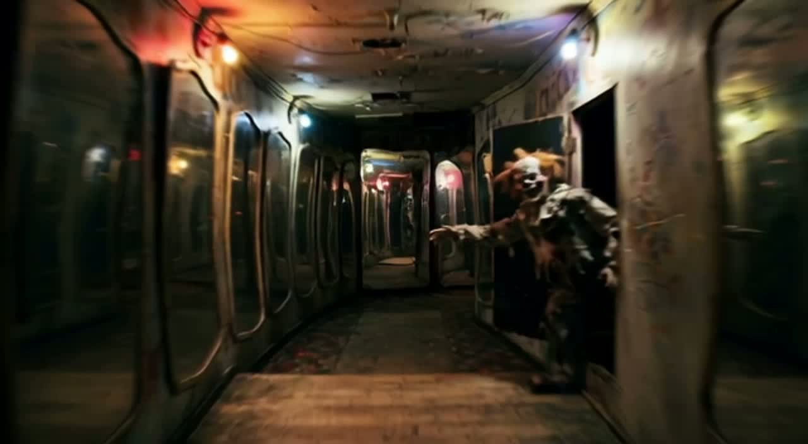

This chapter records the first working JourneyAgent. In AGENT mode, CREATE JOURNEY is no longer Directed click-automation. It runs a shared orchestrator on the same Project: establish opening A if needed, DIRECT, construct unresolved destinations, automatic Motion Plan (CM + Camotion A′/B′), one NEW TAKE per adjacent segment, then assemble selected Takes into Export Movie. COMPLETE requires a valid selected Take on every required adjacent segment, an exportable movie, and successful assembly. The Director panel then shows a completion turn with a Download link. Camotion Phase 1 remains frozen. Directed operations, locomotion, and canonical prompting are unchanged.
AGENT reuses Directed. It does not invent a second pipeline.
JourneyAgent lives in web/src/project/journey-agent.ts. The Project model, destination construction, Motion Plan, NEW TAKE, and Export Movie are the same operations Directed already uses. Agency is DIRECTED or AGENT. Agent hides Options. A required failure stops the loop at FAILED and keeps partial work. This pass does not repair CM refusals, retry Takes, evaluate footage, or pick Takes. Canonical RESHOOT is still a different, destructive operation.
Orchestrator
IDLE → COMPLETE
Phases: IDLE → ESTABLISHING_START → DIRECTING → CONSTRUCTING → PLANNING_MOTION → SHOOTING → ASSEMBLING → COMPLETE. Any required failure goes to FAILED. Structured activity is visible on CREATE JOURNEY while the Agent is busy — generating opening destination A, directing journey, generating destination B, planning A→B, creating A→B TAKE 1, assembling journey. Agency is locked while it runs.
COMPLETE
ASSEMBLE THEN DOWNLOAD
COMPLETE is strict. Every required adjacent segment must have a valid selected Take. The movie must be exportable. Assembly must succeed. Skipping assembly is a failure, not a shortcut. After assembly the Director conversation appends an assembly turn: “The journey is ready.” plus Download.
Two live unattended runs. Same Agent. Different Journey Prompts.
Both movies are first-pass AGENT CREATE JOURNEY output from 15 September 2026: AUTO destinations, Generate all destinations, Shoot, Pruna ~6s takes, five assembled legs (~30s). No Directed clicks after CREATE JOURNEY. Source files: AgenRun1.mp4 and AgentRun2.mp4 from Downloads. The typed Journey Prompt strings were session-only; the prompts below are recovered from the assembled itineraries.
Agent Run 1 — jungle minecart
JOURNEY PROMPT
Ride a rusted minecart through an overgrown jungle temple. Pass under a carved stone face, out across a misty ravine trestle beside waterfalls, into a blue crystal cavern, along a curving cave track, and into a lantern-lit underground dock beside a glowing lake.
Walk through a decaying mirrored funhouse. A clown waits in a doorway. Pass hypnotic checkered halls, a room of laughing carnival faces, a red spiral mouth, a torn-fabric corridor, and out through a giant mouth of teeth into daylight.

Agent Run 2 opening — mirrored hall, clown in the doorway.
Happy path is shipped. Repair is still backlog.
Slice 8 remains the current product overview. Slice 11 remains Takes. This chapter is the first unattended Agent loop on that stack: Journey Prompt → destinations → Motion Plan → NEW TAKE → assembled movie → Download. Not implemented here: CM repair/retry, Footage Evaluator, Agent take selection, STOP/LOOK, DISCOVER, Runway.